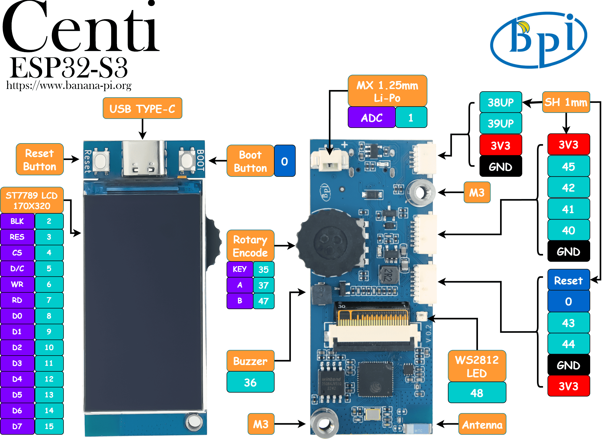

2023-11-01
介绍

BPI-Centi-S3 是一个板载1.9英寸彩屏的小尺寸ESP32-S3开发板，适合用于彩色显示，交互控制，无线通信，传感器数据采集等物联网综合应用项目的开发。
使用Espressif ESP32-S3芯片，支持 2.4 GHz Wi-Fi 和低功耗蓝牙 (Bluetooth® LE) 双模无线通信。
在紧凑的空间下依旧提供一个增量型旋转编码器，一个蜂鸣器，一个WS2812彩灯，及其他所有可用引脚引出，满足多样化的需求。
支持USB和外接3.7V锂电池两种供电方式，可实现双电源下自动切换电源功能，并支持USB充电方式，配置了电池电压检测电路，方便进行电量管理。
关键特性
- ESP32-S3，Xtensa® 32 bit LX7
- 2M PSRAM , 8M FLASH
- 2.4G WIFI ，Bluetooth 5 ，Bluetooth mesh
- GPIO , PWM , I2C , SPI , RMT , I2S , UART ，USB , JTAG
- 1 * ST7789 屏幕，1.9英寸，170*320分辨率，8bit 8080并口
- 1 * 旋转编码器
- 1 * 蜂鸣器
- 1 * 全彩色LED
- 1 * SH 1mm 4-Pin I2C连接座
- 2 * SH 1mm 6-Pin
- 1 * USB Type-C
- 1 * MX 1.25mm 2-Pin 电池连接座，支持充电
- 2 * M3螺丝孔
硬件
硬件接口示意图

硬件规格
| SoC 主控芯片 | ESP32-S3，Xtensa® 32 位 LX7 双核处理器 |
| 主频 | 240MHz MAX |
| 片上 ROM | 384 KB |
| 片上 SRAM | 320 KB |
| 板载 FLASH ROM | 8MB |
| 片上外设PSRAM | 2MB |
| WIFI | IEEE 802.11 b/g/n ，2.4Ghz频带，150Mbps |
| 蓝牙 | Bluetooth 5 ，Bluetooth mesh |
| 外部晶振 | 40Mhz |
| RTC 和低功耗管理 | 电源管理单元 (PMU)+ 超低功耗协处理器 (ULP) |
| GPIO | 已引出9个可用GPIO到SH 插座 |
| 支持外设 | I2C, SPI, PWM, UART, RMT, I2S, SD |
| SH 1mm 插座 | 1 * 4Pin，2 * 6Pin |
| USB | 1 * 全速USB 2.0 OTG，Type-C母口 |
| USB Serial/JTAG 控制器 | 1，USB 全速标准，CDC-ACM ，JTAG |
| 屏幕尺寸 | 1.9 英寸 |
| 屏幕分辨率 | 170 * 320 RGB |
| 屏幕控制芯片 | ST7789V3 |
| 屏幕接口 | 8bit 8080 并口 |
| 编码器 | 1 * 增量型旋转编码器，支持按压功能 |
| 蜂鸣器 | 1 |
| 彩色LED | 1 * WS2812 2020 |
| 按钮 | RST 按钮，BOOT按钮 |
| 整机工作温度 | -20℃ ~ +60℃ |
| 工作电压 | 3.3V |
| USB输入电压 | 3.3V~5.5V |
| 最大放电电流 | 2A@3.3V DC/DC |
| 电池连接座 | MX 1.25mm 2-Pin |
| USB充电 | 支持 |
| 最大充电电流 | 500mA |
硬件尺寸

屏幕接线定义
| ESP_LCD_BLK | GPIO2 |
| ESP_LCD_RES | GPIO3 |
| ESP_LCD_CS | GPIO4 |
| ESP_LCD_D/C | GPIO5 |
| ESP_LCD_WR | GPIO6 |
| ESP_LCD_RD | GPIO7 |
| ESP_LCD_D0 | GPIO8 |
| ESP_LCD_D1 | GPIO9 |
| ESP_LCD_D2 | GPIO10 |
| ESP_LCD_D3 | GPIO11 |
| ESP_LCD_D4 | GPIO12 |
| ESP_LCD_D5 | GPIO13 |
| ESP_LCD_D6 | GPIO14 |
| ESP_LCD_D7 | GPIO15 |
| ESP_TP_RESET | GPIO16 |
| II2C_SCL | GPIO17 |
| II2C_SDA | GPIO18 |
| ESP_TP_INT | GPIO21 |
外设接线定义
| RST按键 | RST(CHIP_PU) |
| BOOT按键 | GPIO0 |
| BAT_ADC 电池电压检测 | GPIO1 |
| 蜂鸣器 | GPIO36 |
| EC_KEY 旋转编码器 | GPIO35 |
| EC_A 旋转编码器 | GPIO37 |
| EC_B 旋转编码器 | GPIO47 |
| WS2812B-2020 | GPIO48 |